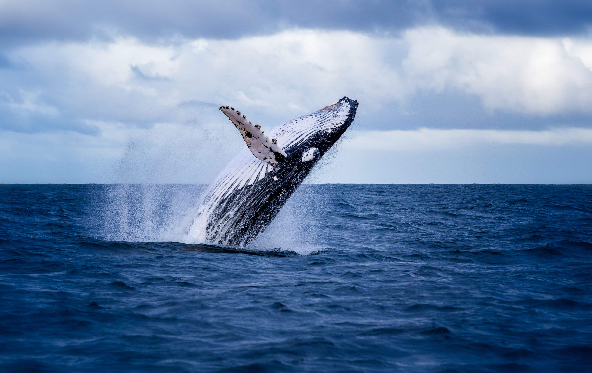
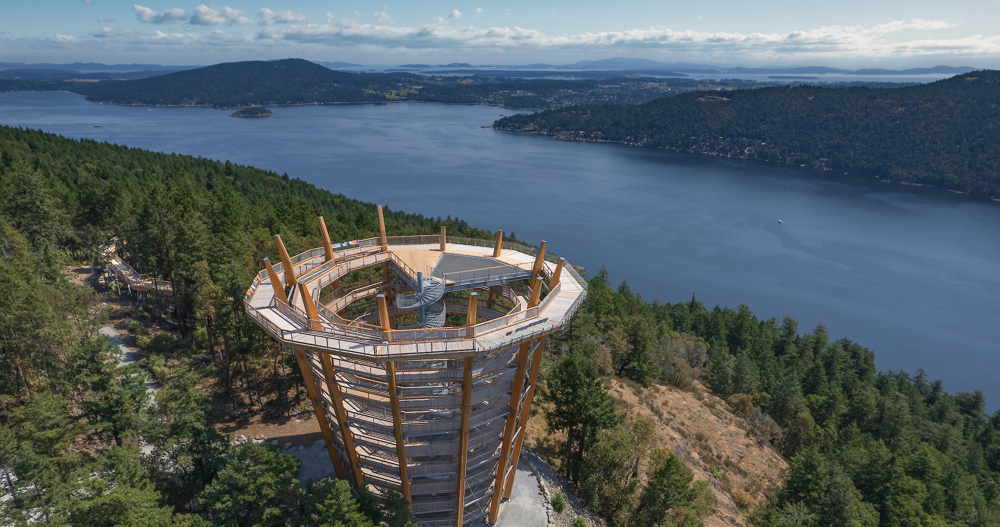
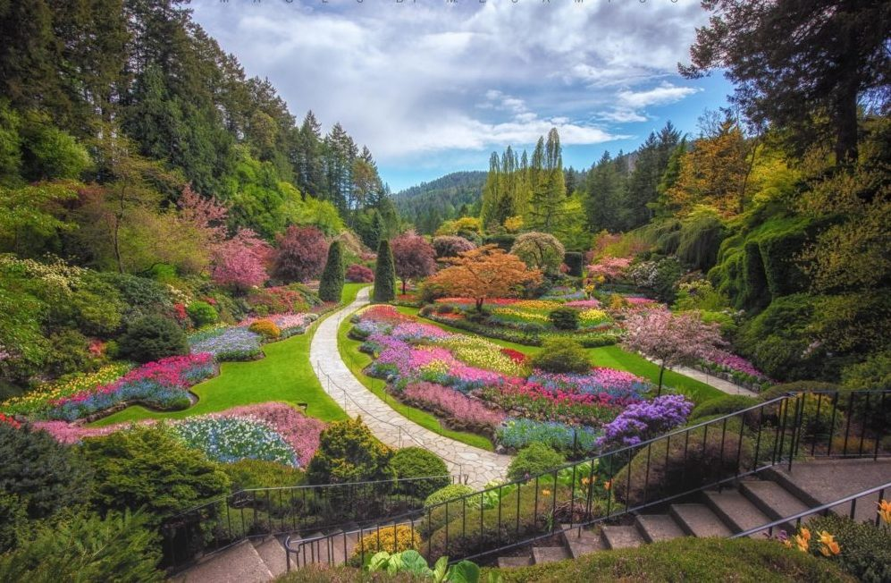

A Glimpse into Victoria's History
Victoria, BC, was founded in 1843 as a Hudson's Bay Company trading post named Fort Victoria, serving as a gateway for fur trading and settlement.
It grew rapidly during the Fraser River Gold Rush of 1858, became the capital of British Columbia in 1868, and has since evolved into a vibrant city celebrated for its British colonial architecture, maritime heritage, and cultural charm.
Victoria's Top 3 Treasures
Whale Watching
Get up close with incredible marine wildlife on unforgettable whale watching tours departing from Victoria's Inner Harbour.
Malahat SkyWalk
Take in the stunning beauty of the Salish Sea and Vancouver Island from an incredible 250 metres above sea level.
Butchart Gardens
The Butchart Gardens, is a world-renowned 55-acre display garden with a history spanning over 121 years.
Your Insider
"I have lived in Victoria, BC for almost five years, and the three activities I've listed are what I think everyone should experience while staying in the city."
Of course, these are just the tip of the iceberg, and there are plenty of other things to do in Victoria if you have a few spare days or even a week.
Don't Be a Stranger While You're Here